的连分数表示。
的连分数表示。第四章 最好的分数
无理数可以用无限不循环小数表示，也可以用无穷连分数表示。利用连分数，可以求得无理数的最佳近似分数。
提起我国古代的数学成就，大家都会说到南北朝时期的祖冲之（429—500年）。祖冲之有一个了不起的贡献，就是对圆周率π的计算。他算出
3.1415926＜π＜3.1415927，
并且建议用一个分数
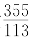
≈3.14159292…来近似地表示π，并把它叫做密率。同时，他把π的另一个近似值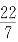
≈3.14叫做约率。为什么说这个
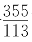
了不起呢？我们可以先看看和祖冲之同时代的或更晚的外国数学家是怎样用分数表示π的。公元530年左右，印度的阿利亚巴塔给出π≈
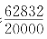
＝3.1416。这和公元前150年托勒密给出的π≈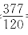
＝3.14167…相近。公元1150年左右，印度的巴斯卡拉给出π≈
越仔细分析，越觉得祖冲之的成就了不起。可惜，他当初的研究方法，现在已无法查考！
我们怎样才能找到一个无理数的最佳近似分数呢？也就是说，给了一个数
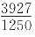
＝3.1416。直到1585年（比祖冲之晚了1000多年），安索尼措恩发现
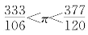
。他把两个分数的分子相加、分母也相加，各取其半，得到了π≈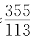
。其实，早在1573年，德国的奥托已把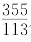
从中国介绍到西方。可见，要用一个分母不太大的分数来近似地表示一个无理数，不是那么容易。
更有趣的是，在分母不超过113的所有分数中，再也找不到π的比
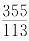
更好的近似值了。在这个意义上，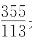
是π的最佳近似分数（参看《数学家的眼光》一书）。不但如此，在所有分母不超过16600的分数中，你会发现，根本找不到比
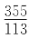
更接近π的分数了[1]。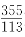
更接近π的分数中，分母最小的是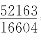
＝3.141592387…a，要在所有分母不超过n的分数中，找一个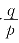
，使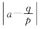
最小。你可以一个一个地试，但是太慢，我们要介绍一个巧妙些的方法。
先从尺子量布谈起。用长为1的尺子去量长为l的布，一下一下地量，量了3下就把布量完了，不多不少，我们便说l＝3。如果还剩个零头呢？通常的办法是，把尺子等分成10小段，用其中的一小段再量这个零头。量了5下，又剩下了比一小段还小的零头，那就把一小段再分成10份，用其中的一份来量这更小的零头；如此反复进行。
这样量得的l＝3.5…是＋进制表示法。如果把尺子10份10份地越分越细，分了几次之后把l量尽了，记下来l＝3.5321，则l是以104为分母的分数，l＝
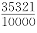
。如果无论把尺子细分多少次，也不能把l量尽，则l就是一个＋进制的无限小数。这个无限小数可能循环，也可能不循环。
我们知道，有理数都可写成无限循环小数。反过来，无限循环小数也都可以化成有理数。
可见，无理数一定是无限不循环小数了。这是把尺子按一分为＋的逐次加细法测量长度l的结果。
还有另一种量法。用长为1的尺量l，量得l是在3与4之间，也就是
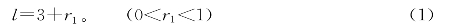
这时不去细分尺子，而干脆把零头r1当成新的尺子来量原来那个长为1的尺子，比如量得
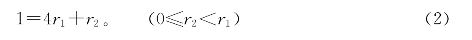
如果r2＝0，则新尺子r1恰巧是原来尺子的
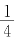
。把（2）式中取r2＝0得到的r1＝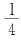
代入（1）式，得到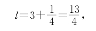
到此测量过程便结束了。
如果r2＞0呢？我们可以把r2当成第3把尺子，然后用它来量第2把尺子r1。比如量得
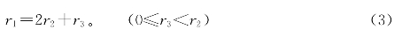
如果r3＝0，过程到此结束。这时r2＝
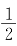
r1，代入（2）式得出r1＝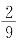
，再代入（1）式，得到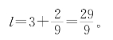
如果又有r3≠0，那就把r3作为第4把尺子来量r2，重复进行下去。
这样反复度量，如果到某一次量尽了，就得到l的一个分数表示法。
会不会永远量不尽呢？会的。l是无理数时，就永远不会结束这个过程。因为，结束了的就一定是有理数。
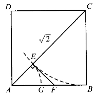
图4-1
再回到
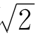
。让我们把正方形的边作为尺子，来量它的对角线，看看会出现什么情形。如图4-1，设ABCD是边长为1的正方形，对角线AC＝
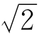
。我们用BC来量AC，在AC上截取CE＝BC＝1，
于是得
AC＝BC＋AE，
即
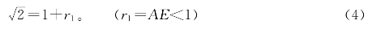
接着，我们用AE来量BC＝AB＝1，即用r1来量1。注意到△BCE中，BC＝EC，故若过E作AC之垂线交AB于F，则FB＝EF＝AE＝r1。在AF上截取AG＝AE＝r1，可见
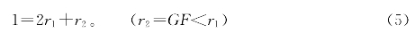
但是，用AE来量AF，这恰巧又是用正方形的边来量它的对角线！因而GF∶AE＝AE∶1，即r2∶r1＝r1∶1，所以
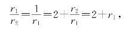
整理得
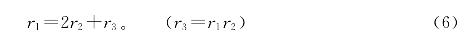
利用r3∶r2＝r1∶1，又得
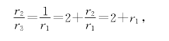
即
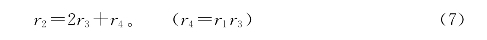
重复进行，得到
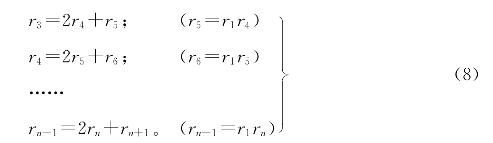
这是一个永远不会结束的过程。
把（4）式到（8）式改写成下列形式：
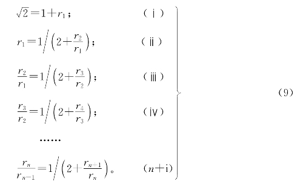
注意到0＜
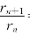
＝r1，由（ⅱ），有r1＜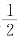
。把（9）式中的（ⅱ）代入（ⅰ），得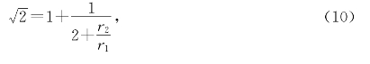
在（10）式中利用
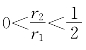
，得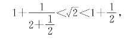
即
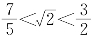
。把（ⅲ）再代入（10）式，得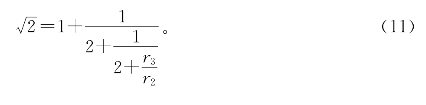
由
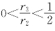
，又得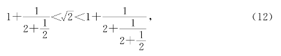
即
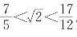
。又把（ⅳ）代入（11）式，得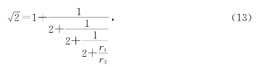
由
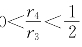
，又得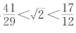
。这些分数，…的值是1.5，…它们越来越接近。
如果把（9）式中的（ⅴ）代入（13），再把（ⅵ）、（ⅶ）…依次代入，得到一个无穷无尽的式子
这叫做的连分数表示。上面的写法太占地方，所以通常写成
或
如果只取有限项，如（13）式，可写成
或者
也可以不通过几何途径，用代数方法更简捷地得到的连分数表示。
设－1＝x，则＝1＋x，于是
2＝1＋2x＋x2，
即
x2＋2x＝1。
两端除以（x＋2），得
把（19）式中的（ⅰ）反复代入（ⅱ），就可以得到前面的（14）等表示式。
把表示成连分式有什么好处呢？如果说是为了用有理数近似地表示，那么在上一章不是已经介绍了计算 的近似值的方法了吗？
的近似值的方法了吗？
我们说，把表示成连分式的一个最主要的好处是：利用连分数，我们可以得到的最佳近似分数。
前面我们得到的一串分数，…都是的最佳近似分数。不信你试试看，能不能找到一个分数，它的分母不超过5，而又比更接近？能不能找到一个分数，它的分母不超过12，而又比更接近？
我们来证明：所有分母不超过12的分数中，以最接近。
首先，从（13）式已经知道。如果有一个分数比更接近，而且0＜m≤12，则有
但
（由m，n均为整数知12n－17m也为整数，又12n－17m≠0，所以｜12n－17m｜≥1）
这证明了m至少要大于等于15，得出矛盾。
用连分数表示法，可以找出的最佳近似分数。那么，能不能用它找出任一个无理数的最佳近似分数呢？
可以。下面我们简单介绍一下连分数的基本知识。一些结论的严格证明，作为附录放在书末，供有兴趣的读者参考。
[连分数的定义] 若a0是非负整数，a1，a2，a3，…，an是正整数，则分数
叫做n级的连分数。
若a1，a2，…，an，an＋1，…是正整数的无穷序列，则下列形式
叫做无限连分数。为了简单，（21）式可记作
[a0，a1，a2，…，an]，
或
（22）式可记作
[a0，a1，a2，…，an，…]
或
有时，为了明确起见，由（21）和（22）定义的连分数叫做简单连分数，以区别于更为一般的连分数，如
在以上定义下，可以证明这样几个命题：
[命题9] 每个n级简单连分数（n≥1），都是正的有理数。反过来，每个正的有理数，都可以表示成n级（n≥1）简单连分数。
[命题10] 每个正的无理数，都可以展成无限简单连分数。反过来，每个无限简单连分数，必然是一个正的无理数。
命题9的含义是清楚的。因为有限连分数总可以由下向上一步一步地化成普通的分数。命题10可就不太清楚了。要弄清命题10的含义，首先得弄清什么叫“一个数α可以展成无限连分数”。
无限连分数[a0，a1，a2，…，an，…]中，把ak后面的大尾巴砍掉，就变成一个k级连分数[a0，a1，a2，…，ak]。这k级连分数可以化成普通的分数叫做这个无限连分数的第k个近似分数。如果随着k的增大，这个越来越接近实数α，要多接近有多接近，我们就说α可以展成无限连分数[a0，a1，a2，…，an，…]，也写成
α＝[a0，a1，a2，…，an，…]。
如果k≤n，n级连分数的第k个近似分数可以完全类似地来定义。
连分数的最重要的性质就是：
[命题11] 若α是一个正实数，是它的连分数展式的第k个近似分数，且pk，qk没有大于1的公约数，则在一切分母不超过qk的分数中，和α最接近，即
更准确地说，有
这3个命题，我们在这里就不证明了。现在用几个例子说明如何把一个实数展成连分数。
[例1] 把展成连分数，并求各个近似分数。
解 由
于是得
于是，的0，1，2，3，4级近似分数分别是
[例2] 把展成无限连分数，并求前4个近似分数。
解 利用把展成连分数的类似方法来解。设y＝ －1，则由（－1）（＋1）＝2，得y（y＋2）＝2，因而，于是
－1，则由（－1）（＋1）＝2，得y（y＋2）＝2，因而，于是
把此式反复代入右端式中的y，得
y＝[0，1，2，1，2，…]，
因此
的前4个近似分数是
它们的值分别是2，1.，1.75，1.，，越来越接近＝1.7321…
[例3] 把π＝3.14159265…展成连分数，并求前5个近似分数。
解
接下去有
于是得
π＝[3，7，15，1，292，…]。
由此得到π的前5个近似分数：
由命题11的（23）式可知
[例4] 地球绕太阳一周要用365天5小时48分46秒，也就是要用
试把α*展成连分数。
解 由于
故得α*＝[365，4，7，1，3，5，64]。由此求得α*的小数部分的近似分数顺次是。
用这个结果，可以很清楚地解释四年一闰、百年少一闰等历法规定。如果取近似值α*≈365，可见每4年多出1天，即四年一闰。要是再准确一点，采用365，则是29年多7天；若按四年一闰，闰7次才28年，接着就要停闰1年。更精确的是用365，这样99年要加24天；如果四年一闰，每百年加25天就不如百年加24天准确；也就是百年少一闰，这样已经够精确了。再精确一点，还可以逢400年加一闰，等等。
连分数在高等数学中是一个重要工具，它还可以推广到有理分式，把有理分式化成连分式。
练习题四
1.除了之外，在分母不超过12的分数中，还有没有的最佳近似分数？
2.把展成无限连分数，求前5个近似分数。
3.1.12元钱可买水果糖41块，买4块糖收几角几分钱最合理？买11块呢？
4.把展成连分数。
5.若有限数α＝[a0，a1，a2，…，an]，求证：当2k＋1≤n时，有：
[a0，a1，…，a2k]≤α≤[a0，a1，a2，…，a2k＋1]。
6.若，求证：
7.求证α＝[a，b，c，b，c，b，c，b，c，…]一定是整系数二次方程式的根。[a，b，c，a，b，c，a，b，c，…]是否也是呢？
8.你能把一个正整数n＝m2＋1的平方根展成连分数吗？
【注释】
[1]比